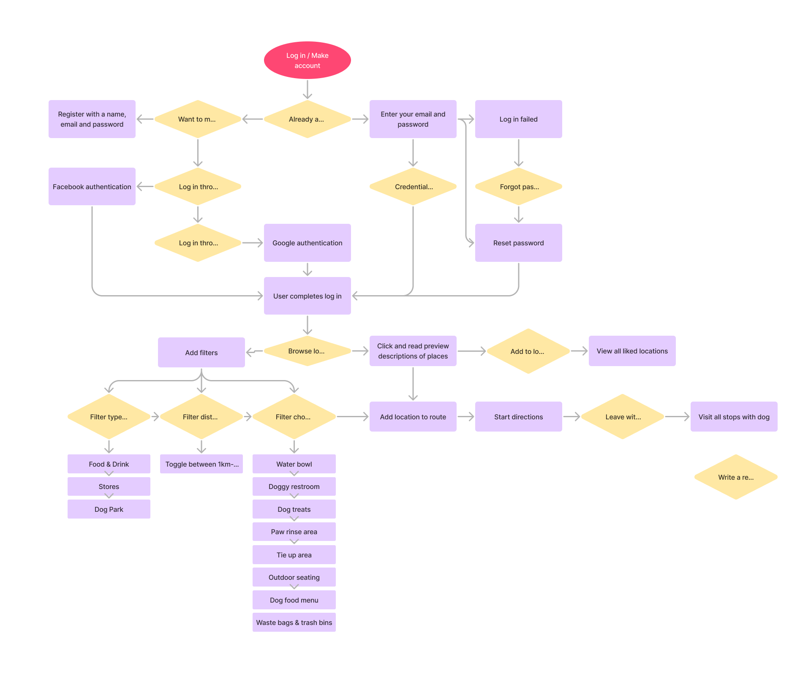
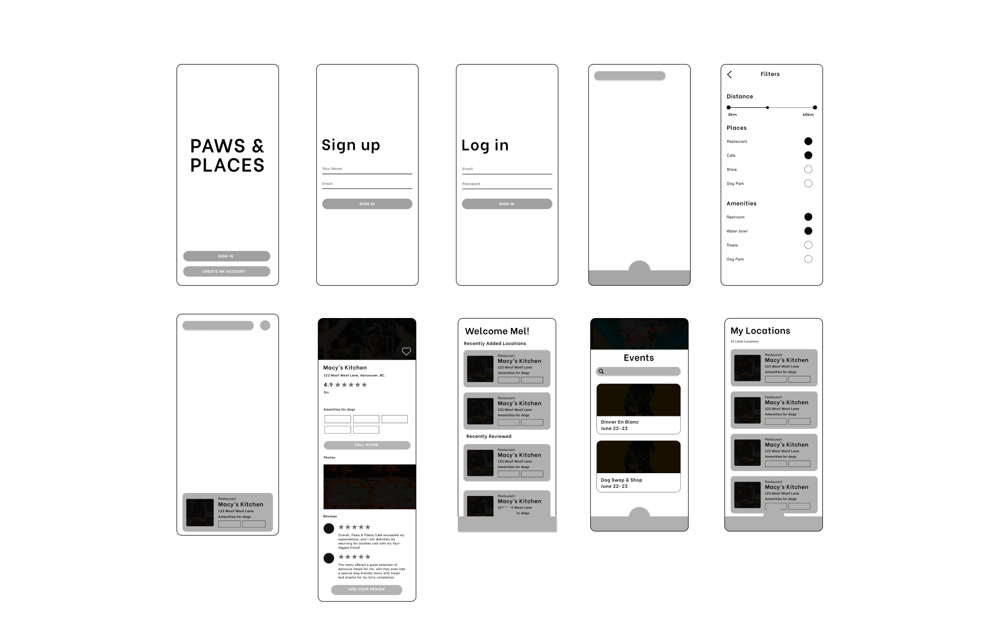

Overview
We're on a mission to make life easier for dog owners in Vancouver!
From cozy cafes to scenic parks and everything in between, we've got
you covered! Our goal is to make planning outings with your pup a
breeze, so you can both have a great time exploring the city together.
The Problem
Dog owners in Vancouver often struggle to find easily accessible information about pet-friendly places to bring their furry friends. The lack of a centralized resource for this information can leave them feeling frustrated and even guilty, as they strive to include their pets in as many activities and outings as possible.
Research
From my research, I found that dog owners really want to know about
places to bring their pet, but the information is often limited to
calling or looking up a specific place. A few opportunities for an app
include showing all pet-friendly places on one platform, giving people
the choice to stop at many locations with their pet.
User Flow
Opportunity
After researching popular dog-friendly location apps, I found that it
is important to have a short bio of the place for users to click in
and out of, as well as having live filters on the location app to make
it easier to find multiple categories of pet-friendly places.
Solution
Key Findings:
- Lack of awareness
- Lack of information on amenities
- Limited information on transportation options
- Include all pet-friendly places in Vancouver, including cafes, shops, parks, and restaurants.
- Search for pet-friendly locations based on preferences and location.
- Education and awareness methods.
- Have a community within the app where dog owners can share their experiences.
Wireframes

Map Selection
See the top locations that we think you'll like.

Home Page
View locations around you and plan your route.